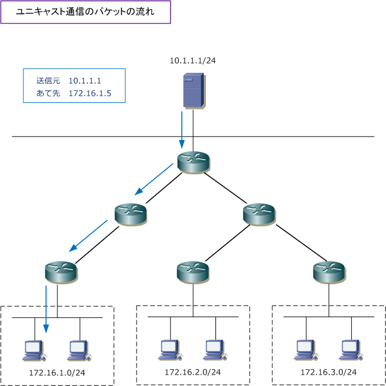
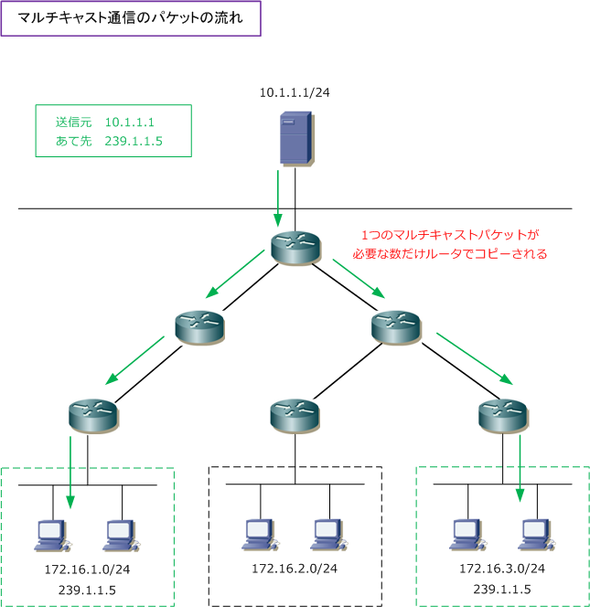
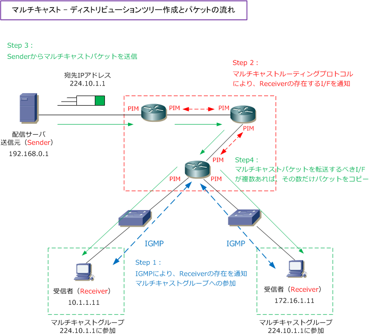

Multicast Distribution Tree
マルチキャスト - ディストリビューションツリーの特徴
ユニキャスト伝送では「1対1の通信」であることから、1つの送信元から1つの宛先への伝送が行われます。 例えば下図では「10.1.1.1/24」から「172.16.1.5/24」へのパケット転送は、1つのフローで形成されます。

マルチキャスト伝送では「1対Nの通信」であることから、1つの送信元から複数の宛先へ伝送が行われます。 下図の 10.1.1.1/24 から 239.1.1.5 へのパケット転送において、239.1.1.5 という宛先が複数あることから、 1つのパケットがルータでコピーされていき、枝分かれしてツリー状に形成されていきます。以上のことから このツリーはマルチキャスト ディストリビューション（配送ツリー）と呼ばれます。ディストリビューション ツリーは、マルチキャストグループのメンバーが動的に参加、離脱することから、常に動的に形成されます。

マルチキャスト - ディストリビューションツリー作成の流れ
ディストリビューションツリー作成と維持は、主にマルチキャストルーティングプロトコルで行われますが 厳密には次のフローでディストリビューションツリーが作成され、マルチキャストパケットが転送されます。
Step 1 - Receiverのマルチキャストグループへの参加
Receiverがマルチキャストパケットを受信するために、ラストホップルータにIGMPというプロトコルで Receiverの存在を通知して、マルチキャストグループへの参加を通知します。
Step 2 - マルチキャストルーティングプロトコルによるルータ間の通知
マルチキャストルーティングプロトコルの例えば PIM を有効にしているルータでは、ルータ間において PIMネイバーが確立されており、IGMPによってReceiverの存在が分かれば、PIMネイバーに通知します。
Step 3 - Senderからのマルチキャストパケットの送信
ルータは、IGMPでReceiverの存在と参加するマルチキャストグループを知り、PIMによってその情報が マルチキャストルータに伝わっていき、そして、SenderがマルチキャストパケットをReceiverへと送信。
Step 4 - マルチキャストルーティングによりマルチキャストパケットを転送
Senderから受信したマルチキャストパケットは、マルチキャストルーティングによりパケット転送されて いきます。マルチキャストパケットを転送すべきインターフェースが複数ある場合、1つのマルチキャスト パケットを必要な数だけコピーして転送してきます。

以上の通り、ディストリビューションツリーではルータがマルチキャストを受信すべきインターフェースと マルチキャストを転送すべきインタフェースの情報が形成されます。ユニキャストのルーティングテーブル のように事前に作成した情報に基づき転送されるのではなく、Receiverのマルチキャストグループの参加や、 Senderからのマルチキャストパケットの送信により、ディストリビューションツリーは動的に作成されます。